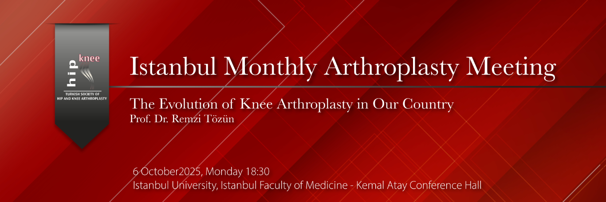

Dear Colleagues,
The Istanbul Monthly Arthroplasty Meeting will be held on Monday, October 6, at 18:30, at Istanbul University, Istanbul Faculty of Medicine – Kemal Atay Conference Hall.
The topic of this month’s meeting will be:
“The Evolution of Knee Arthroplasty in Our Country”
We are honored to welcome Prof. Dr. Remzi Tözün, one of the most respected figures in the Turkish Orthopedics and Traumatology community and a pioneer of knee arthroplasty in Turkey. With his extensive knowledge and unique experience, Professor Tözün will share with us valuable anecdotes from the earliest applications of knee prosthesis surgery in Turkey, the developmental process, lessons learned during the transition to modern approaches, and his vision for the future.
We sincerely invite all our colleagues—especially young residents and specialists, whom we believe will benefit greatly—to join us in this special meeting, which promises to be both informative and inspiring.
Moderator:
Prof. Dr. İrfan ÖZTÜRK
Program:
18:30 – 19:00 Reception & Dinner
19:00 – 19:30 “The Evolution of Knee Arthroplasty in Our Country”
Prof. Dr. Remzi TÖZÜN
19:30 – 20:00 Case Discussions
Note: For case presentations or results you would like to share, please contact us in advance for planning purposes.
Contact for the meeting:
Dr. Vahit Emre ÖZDEN
Tel: 532361464
vahitemre@gmail.com
Prof. Dr. Cengiz ŞEN
Istanbul University, Istanbul Faculty of Medicine
